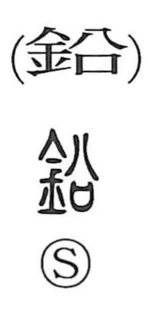

鉛

Uncategorized
Kun: namari | On: en
lead (metal)
Explanation
A phono-semantic character: the metal radical marks it as a metal, while the phonetic element signals the Sino-Japanese reading en. It denotes lead (namari), also known in Japanese as “black tin.” This lives on in the word enpitsu, “pencil,” whose so-called lead is a core made by mixing black lead (graphite) with clay.